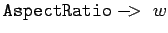
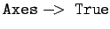
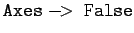
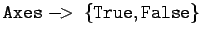
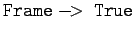
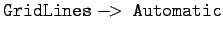
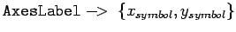
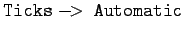
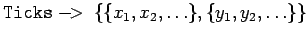

Inhalt Index DeskTop Bronstein

 Computeralgebrasysteme Graphik in Computeralgebrasystemen Graphik mit Mathematica
Computeralgebrasysteme Graphik in Computeralgebrasystemen Graphik mit Mathematica


Mathematica bietet eine Vielzahl von Graphikoptionen, die die Gestaltung des Bildes als Gesamtheit betreffen. In der folgenden Tabelle ist eine Auswahl der wichtigsten gegeben. Für eine umfassende Darstellung wird auf Lit. 20.5 verwiesen.
|  | setzt das Verhältnis w von Höhe zu Breite. |
|  | setzt Koordinatenachsen |
|  | setzt keine Koordinatenachsen |
|  | zeichnet nur die x-Achse |
|  | erzeugt Rahmen |
|  | erzeugt Gitterlinien |
|  | beschriftet die Achsen mit dem angegebenen Symbol |
|  | setzt Skalierungsstriche automatisch, mit None werden diese unterdrückt |
|  | an den angegebenen Stellen werden Skalenmarken gesetzt |